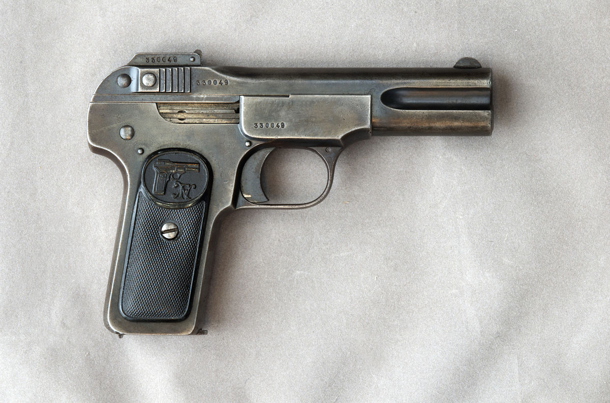
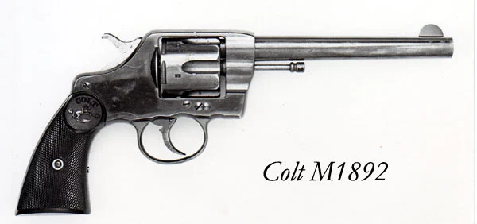
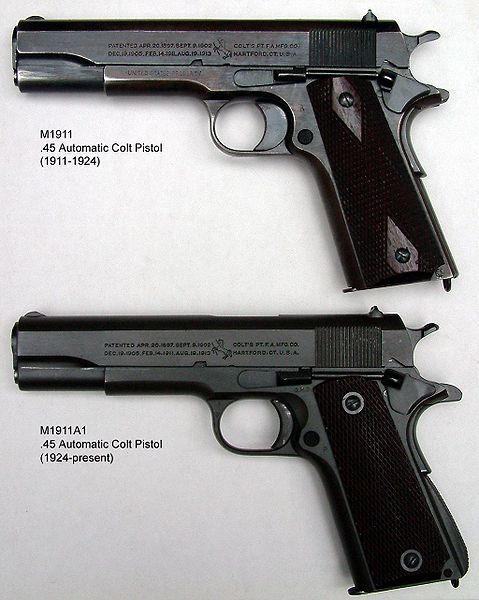

Kolem přelomu 19. a 20. století se začaly oběvovat první samonabíjecí pistole. Zbraně inspirované kulometem Maxim jako Borchardt C-93 a mauser C96 se začali oběvovat pokušející se zmenšit opakující se mechanismus. První Američan co se pokoušel o stejnou věc byl John Moses Browning, legendární zbraňový návrhář co uďelal první pistoli s dynamickým závěrem FN M1900.
Browningův design se zlepšoval v dalším desetiletí vyvrcholující v dnes známý vyroben Coltem a otestován Americkou armádou. Tenkrát bylo předloženo 6. pistolí, ale jen dvě vybrány Colt a design od Savage arms. Ve vytrvalostním testu při kterém se s pistolema vystřelilo 6000 nábojů Savage arms měli 37 závad a Colt neměl žádné.
Lepší výkon Coltu vedl k jeho adopci americkou armádou v roce 1911 což dalo zbrani jméno M1911.
Jedna z vlastností pistlole je že má ráži 45 a používá náboj .45 ACP(Automatic Colt Pistol). Tento náboj byl zvolen ze dvou důvodů 1. aby zbraň byla spolehlivá samonabíjecí pistole 2. zastavující účinek, pro který se americká armáda rozhodla po skušenostech se střetem s Juramentados v jižních filipínách.
Americká armáda před používáním M1911 používala šestiraný revolver Colt M1892, který používal náboj .38 long colt.
Coltu 1911 ovšem chybí moderní vymoženost. Je pouze single-action což znamená, že nemůže střílet ze spuštěného kohout. Nicméně nekomplikovaný design má své výhody jako spoušť a spolehlivost. Kompenzace zpětného rázu u 1911 je taky jednou z vymožeností coltu. Hlaveň má na sobě zuby, které pasují do uzamikacích ozubů na závěru. Hlaveň je připevněná na řetízkový článek což dalo za vznik "zamykacímu" systému, který je dnes imitován v mnoha pystolích např: Glock.
Design M1911 byl po skušenostech z 1. světové válce poupraven na M1911A1
Za 2. světové války byly vyrodukovány skoro 2 milióny kusů. Přestože armáda už nepoužívá 1911 je dnes populární mezi civilem, používá se na soutěžích nebo pro skrytém nošení.